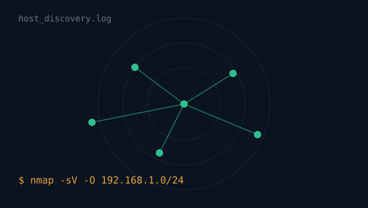
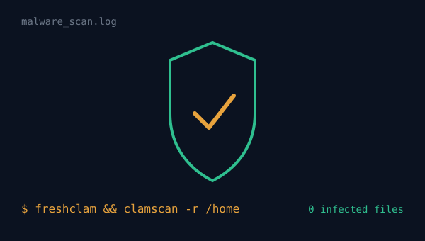
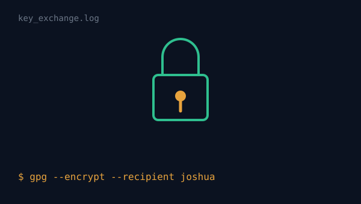
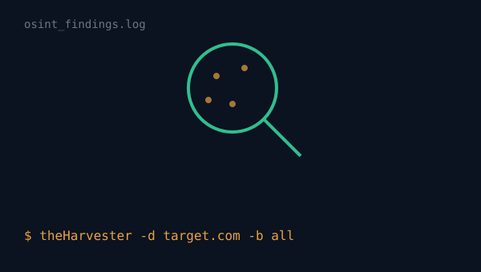

● scan complete
Network Discovery with Nmap
Performed network discovery, port scanning, and operating system detection using Kali Linux in a controlled lab environment.
Lab reports
Hands-on cybersecurity work completed in controlled lab environments — each one framed here as a scan report, the way a security tool itself might present it.

Performed network discovery, port scanning, and operating system detection using Kali Linux in a controlled lab environment.

Installed and configured ClamAV, updated malware signatures, scheduled automated scans, and verified detection using the EICAR test file.

Generated RSA public and private keys, encrypted confidential messages, and successfully decrypted them using GPG.

Conducted ethical Open Source Intelligence investigations using publicly available information.
Reference material
A reference tutorial I studied while working on the network discovery project above.